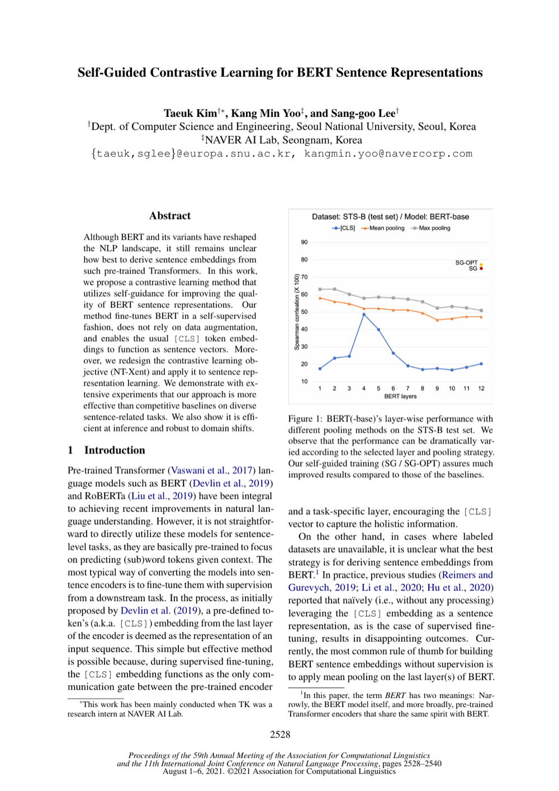

Self-Guided Contrastive Learning for BERT Sentence Representations
ACL-IJCNLP 2021
Taeuk Kim, Kang Min Yoo, Sang-goo Lee
One-Line Summary
Improving BERT sentence representations through self-guided contrastive learning

Figure 1. Self-Guided Contrastive Learning for BERT. The method uses the model's own intermediate representations to guide contrastive learning for improved sentence embeddings.
Key Points
Proposes a method for enhancing BERT sentence representations using self-guided contrastive learning
Generates richer sentence embeddings by leveraging the model's own representations without external data